Transient one-dimensional flow
Contents

The Python code provided below is from
Analytical Groundwater Modeling: Theory and Applications Using Python
by Mark Bakker and Vincent Post
ISBN 9781138029392
The book is published by CRC press and is available here.
This Notebook is provided under the MIT license.
© 2022 Mark Bakker and Vincent Post
Transient one-dimensional flow#
%matplotlib inline
import numpy as np
import matplotlib.pyplot as plt
plt.rcParams["figure.figsize"] = (8, 3) # set default figure size
plt.rcParams["figure.autolayout"] = True # same at tight_layout after every plot
Step changes in surface water level#
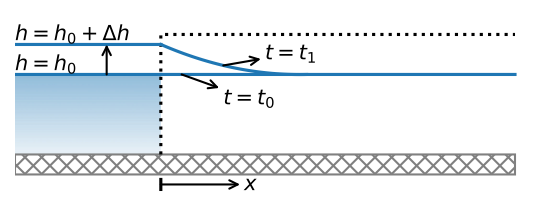# parameters
T = 100 # transmissivity, m^2/d
S = 0.2 # storage coefficient, -
delh = 2 # change in river level, m
t0 = 0 # time of change in river level, d
# solution
from scipy.special import erfc
def h_edelman(x, t, T, S, delh=1, t0=0):
u = np.sqrt(S * x ** 2 / (4 * T * (t - t0)))
return delh * erfc(u)
def Qx_edelman(x, t, T, S, delh, t0=0):
u = np.sqrt(S * x ** 2 / (4 * T * (t - t0)))
return T * delh * 2 * u / (x * np.sqrt(np.pi)) * np.exp(-u ** 2)
---------------------------------------------------------------------------
ModuleNotFoundError Traceback (most recent call last)
Input In [3], in <cell line: 2>()
1 # solution
----> 2 from scipy.special import erfc
4 def h_edelman(x, t, T, S, delh=1, t0=0):
5 u = np.sqrt(S * x ** 2 / (4 * T * (t - t0)))
ModuleNotFoundError: No module named 'scipy'
# basic plot head and Qx vs x
x = np.linspace(1e-12, 200, 100)
plt.subplot(121)
for t in [1, 10, 100]:
h = h_edelman(x, t, T, S, delh, t0)
plt.plot(x, h, label=f'time={t} d')
plt.grid()
plt.xlabel('$x$ (m)')
plt.ylabel('head (m)')
plt.legend()
plt.subplot(122)
for t in [1, 10, 100]:
Qx = Qx_edelman(x, t, T, S, delh, t0)
plt.plot(x, Qx, label=f'time={t} d')
plt.grid()
plt.xlabel('$x$ (m)')
plt.ylabel('$Q_x$ (m$^2$/d)');
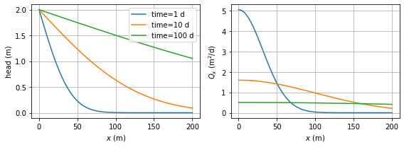
# basic plot head and Qx vs t
t = np.linspace(1e-12, 100, 100)
plt.subplot(121)
for x in [50, 100, 200]:
h = h_edelman(x, t, T, S, delh, t0)
plt.plot(t, h, label=f'distance {x} m')
plt.grid()
plt.xlabel('$time$ (d)')
plt.ylabel('head (m)')
plt.legend()
plt.subplot(122)
for x in [50, 100, 200]:
Qx = Qx_edelman(x, t, T, S, delh, t0)
plt.plot(t, Qx, label=f'distance {x} m')
plt.grid()
plt.xlabel('$time$ (d)')
plt.ylabel('$Q_x$ (m$^2$/d)')
plt.legend();
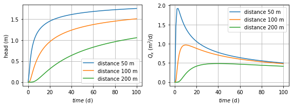
x = 100 # m
t = 10 # d
T = 100 # m^2/d
S = 0.2 # -
print(f'head at x = {x} m, t = {t} d for T = {T} and S = {S}:')
print(f'u = {np.sqrt(S * x ** 2 / (4 * T * t)):.3f}')
print(f'h = {h_edelman(x, t, T, S, delh):.6f} m')
head at x = 100 m, t = 10 d for T = 100 and S = 0.2:
u = 0.707
h = 0.634621 m
t = 0.1 # d
S = 0.002 # -
print(f'head at x = {x} m, t = {t} d for T = {T} and S = {S}:')
print(f'u = {np.sqrt(S * x ** 2 / (4 * T * t)):.3f}')
print(f'h = {h_edelman(x, t, T, S, delh):.6f} m')
head at x = 100 m, t = 0.1 d for T = 100 and S = 0.002:
u = 0.707
h = 0.634621 m
delt = 10 # time period for which water balance is checked
Qin = 2 * delh * np.sqrt(S * T * delt / (np.pi))
from scipy.integrate import quad
stored = S * quad(h_edelman, 1e-12, np.infty, args=(delt, T, S, delh, 0))[0]
print(f'total inflow from river : {Qin:.6f} m^3')
print(f'total increase in storage: {stored:.6f} m^3')
total inflow from river : 3.191538 m^3
total increase in storage: 3.191538 m^3
delh = np.array([1, 1, -2, 1]) # sequence of river stage changes, m
t0 = np.array([0, 10, 20, 30]) # sequence of times of changes, d
# solution
t = np.linspace(1e-3, 40, 400) # start jus after t=0
h10 = np.zeros(len(t))
h100 = np.zeros(len(t))
for i in range(len(t0)):
h10[t > t0[i]] += h_edelman(10, t[t > t0[i]], T, S, delh[i], t0[i])
h100[t > t0[i]] += h_edelman(100, t[t > t0[i]], T, S, delh[i], t0[i])
# basic plot head (bottom graph)
plt.plot(t, h10, label='x=10 m')
plt.plot(t, h100, label='x=100 m')
plt.grid()
plt.xlabel('time (d)')
plt.ylabel('head change (m)')
plt.legend();
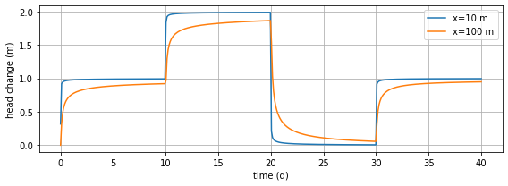
Periodic changes in surface water level#
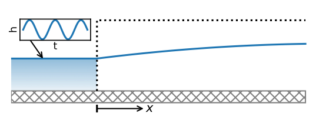# parameters
T = 1000 # transmissivity, m^2/d
S = 0.1 # storate coefficient, -
tau = 0.5 # tidal period, d
tp = 0 # time of peak at canal, d
mu = np.sqrt(T * tau / (S * np.pi)) # characteristic length, m
print(f'characteristic length: {mu:.2f} m')
characteristic length: 39.89 m
# solution for unit amplitude
def head(x, t, tau, S, T, tp=0, t0=0):
B = np.exp(-x * np.sqrt(S * np.pi / (T * tau)))
ts = x * np.sqrt(S * tau / (4 * np.pi * T))
return B * np.cos(2 * np.pi * (t - tp - ts) / tau)
# basic plot
x = np.linspace(0, 200, 100)
for t in np.arange(0, tau, tau / 4):
h = head(x, t, tau, S, T, tp)
plt.plot(x, h)
plt.plot(x, np.exp(-x / mu), 'k--')
plt.plot(x, -np.exp(-x / mu), 'k--')
plt.legend(['$t=0$', '$t=\\tau/4$', '$t=\\tau/2$', '$t=3\\tau/4$', 'amplitude'],
loc='upper right')
plt.xlabel('x (m)')
plt.ylabel('head (m)')
plt.grid();
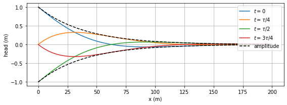
# parameters
tau1 = 745 / (24 * 60) # M2 period, d
tau2 = 1549 / (24 * 60) # O1 period, d
tp1 = 0 # time of peak M2, d
tp2 = 100 / (24 * 60) # time of peak of O1, d
mu1 = np.sqrt(T * tau1 / (S * np.pi)) # characteristic length M2, m
mu2 = np.sqrt(T * tau2 / (S * np.pi)) # characteristic length O1, m
print(f'characteristic length M2: {mu1:.2f} m')
print(f'characteristic length O1: {mu2:.2f} m')
characteristic length M2: 40.58 m
characteristic length O1: 58.52 m
# basic plot
t = np.linspace(0, 4, 400)
for i, x in enumerate([0, 100, 200, 300]):
h = 1 * head(x, t, tau1, S, T, tp1) + \
0.4 * head(x, t, tau2, S, T, tp2)
plt.subplot(2, 2, i + 1)
plt.plot(t, h, label=f'x={x} m')
plt.xlabel('time (d)')
plt.ylabel('head (m)')
plt.grid()
plt.legend();
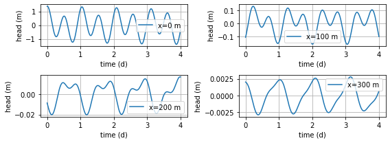
Areal recharge between two rivers#
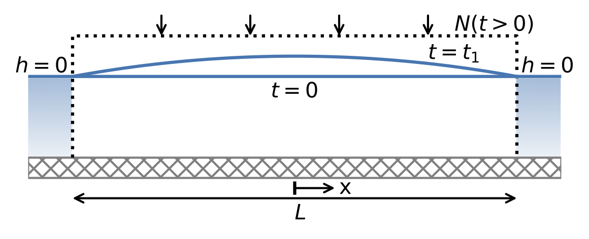# parameters
L = 1000 # aquifer length, m
S = 0.1 # storage coefficient, -
T = 200 # transmissivity, m^2/d
N = 0.001 # recharge rate, m/d
# solution
def head(x, t, T=T, S=S, L=L, N=N, nterms=10):
h = 0
for n in range(nterms):
h += (-1)**n / (2 * n + 1)**3 * \
np.cos(((2 * n + 1) * np.pi * x) / L) * \
np.exp(-((2 * n + 1)**2 * np.pi**2 * T * t) / (S * L**2))
h = -N / (2 * T) * (x**2 - L**2/4) - 4 * N * L**2 / (np.pi**3 * T) * h
return h
# basic head plot
plt.subplot(121) # early time
x = np.linspace(-L / 2, L / 2, 100)
for t in [1, 2, 3]:
plt.plot(x, head(x, t, nterms=3), '--')
plt.plot(x, head(x, t, nterms=10), label=f'time={t} d')
plt.xlabel('x (m)')
plt.ylabel('head (m)')
plt.legend()
plt.grid()
plt.subplot(122) # late time
for t in [40, 80, 160]:
plt.plot(x, head(x, t, nterms=1) , '--') # just 1 term is enough
plt.plot(x, head(x, t, nterms=10), label=f'time={t} d')
plt.plot(x, head(x, 0, nterms=0), 'k', label='steady'); # 0 terms gives steady solution
plt.xlabel('x (m)')
plt.ylabel('head (m)')
plt.legend()
plt.grid();
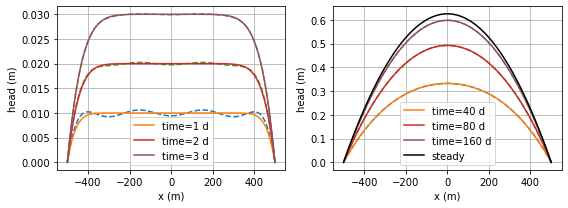
t95 = 3 * S * L**2 / (np.pi**2 * T)
print(f'The memory of the system is: {t95:0.0f} d')
The memory of the system is: 152 d
# plot step recharge and response and block recharge and response at x=0
x = 0
delt = 365 / 12
t = np.linspace(0, 210, 211)
plt.subplot(221)
plt.plot([0, 210], [1, 1])
plt.ylabel('recharge (mm/d)')
plt.subplot(222)
plt.plot([0, 30, 30, 210], [1, 1, 0, 0])
plt.subplot(223)
h = N * head(x, t, N=1)
plt.plot(t, h)
plt.xlabel('time (d)')
plt.ylabel('head (m)')
plt.subplot(224)
h[t > delt] -= N * head(x, t[t > delt] - delt, N=1)
plt.plot(t, h)
plt.xlabel('time (d)');
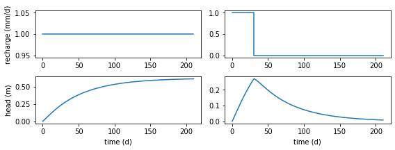
# four years of monthly recharge data
delt = 365 / 12
recharge = 0.001 * np.array( # convert recharge from mm/d to m/d
[ 1.2, 1.5, 0.8, -1.2, 0.2, -2.9, -0.6, 2.8, 1.2, 0.9, 3.8,
1.8, 1.9, 1.8, -0.6, -1.3, -2.5, 0.6, 0.9, 1.8, -0.3, 0.8,
-0.2, 3.8, 2.8, 0.3, -0.5, 0.3, -1.1, 1.5, 1. , -1.5, 0.1,
1.5, 1. , 4. , 1.3, 1.3, 0.3, -1.1, 0.6, -0.8, -1.2, -1.6,
1.3, 1.4, 2.4, 2.6])
ntime = len(recharge) # number of month
# discrete block response
def bresponse(x, ntime, delt, T=T, S=S, L=L, nterms=10):
t = np.linspace(delt, ntime * delt, ntime)
return head(x, t, T, S, L, 1, nterms) - \
head(x, t - delt, T, S, L, 1, nterms)
# solution
h0 = np.zeros(ntime + 1) # head at x=0
h400 = np.zeros(ntime + 1) # head at x=400
b0 = bresponse(0, ntime, delt, T, S, L)
b400 = bresponse(400, ntime, delt, T, S, L)
for n in range(1, len(recharge) + 1):
h0[n] = np.sum(recharge[0:n] * b0[n - 1::-1])
h400[n] = np.sum(recharge[0:n] * b400[n - 1::-1])
# basic plot recharge data and head response
plt.subplot(211)
time = np.linspace(0, ntime * delt, ntime + 1)
plt.step(time[:-1], 1000 * recharge, where='post'); # plt.stairs in mpl>=3.4
plt.ylabel('recharge (mm/d)')
plt.grid()
plt.subplot(212)
plt.plot(time, h0, label='$x=0$ m')
plt.plot(time, h400, label='$x=400$ m')
plt.grid()
plt.xlabel('time (d)')
plt.ylabel('head (m)')
plt.legend();
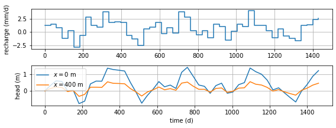
def simplebresponse(A, a, delt, nstep):
t = np.linspace(0, nstep * delt, nstep + 1)
hstep = A * (1 - np.exp(-t / a))
return hstep[1:] - hstep[:-1]
def fobj(p, delt=delt, recharge=recharge, hobs=h0, return_heads=False):
A, a = p
ntime = len(recharge)
b = simplebresponse(A, a, delt, ntime + 1)
hm = np.zeros(ntime + 1)
for n in range(1, ntime + 1):
hm[n] = np.sum(recharge[0:n] * b[n - 1::-1])
if return_heads:
return hm
rv = np.sum((hobs - hm) ** 2)
return rv
from scipy.optimize import fmin
A, a = fmin(fobj, [300, 50], disp=0)
print(f'Estimated parameters A: {A:.2f} d, a: {a:.2f} d')
hm = fobj([A, a], return_heads=True) # compute modeled heads
Estimated parameters A: 629.89 d, a: 53.03 d
# basic plot modeled heads
plt.plot(h0, 'C1.', label='observed')
plt.plot(hm, 'C0', label='modeled')
plt.xlabel('month')
plt.ylabel('head (m)')
plt.grid()
plt.legend();
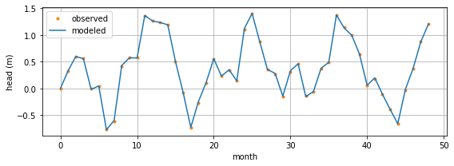
Solutions with Laplace transforms#
# coefficients V_k
from scipy.special import factorial as fac
def stehfest_coef(M):
assert M % 2 == 0, 'M must be even' # make sure M is even
M2 = int(M / 2)
V = np.zeros(M)
for k in range(1, M + 1):
z = np.zeros(min(k, M2) + 1)
for j in range(int((k + 1) / 2), min(k, M2) + 1):
z[j] = j ** M2 * fac(2 * j) / \
(fac(M2 - j) * fac(j) * fac(j - 1) * fac(k - j) * fac(2 * j - k))
V[k - 1] = (-1) ** (k + M2) * np.sum(z)
return V
# Stehfest algorithm
def stehfest(x, t, func, M=12, **kwargs):
t = np.atleast_1d(t)
x = np.atleast_1d(x)
f = np.zeros((len(x), len(t)))
V = stehfest_coef(M)
for i in range(len(t)):
p = np.arange(1, M + 1) * np.log(2) / t[i]
for j in range(len(x)):
fbar = func(p, x[j], **kwargs)
f[j, i] = np.log(2) / t[i] * np.sum(V * fbar)
return f
# parameters
T = 100 # transmissivity, m^2/d
S = 0.2 # storage coefficient, -
delh = 2 # increase in river level, m
# Laplace-transformed solution
def hbar(p, x, T=100, S=1e-3, delh=2):
return delh / p * np.exp(-x * np.sqrt(p * S / T))
# comparison
x = 50 # location, m
t = 10 # time, d
M = 12 # number of terms
V = stehfest_coef(M)
hx = h_edelman(x, t, T, S, delh=2) # from Section 5.1
hs = stehfest(x, t, hbar, M=M, T=T, S=S)
print(f'Exact head at x={x} m and t={t} d: {hx}')
print(f'Stehfest head with M={M} terms : {hs}')
print(f'Relative error: {(hs - hx) / hx}')
Exact head at x=50 m and t=10 d: 1.2341501549039475
Stehfest head with M=12 terms : [[1.23415675]]
Relative error: [[5.34721333e-06]]
Mlist = np.arange(2, 33, 2)
error = np.zeros(len(Mlist))
for i, M in enumerate(Mlist):
hs = stehfest(x, t, hbar, M=M, T=T, S=S)
error[i] = np.abs((hs - hx) / hx)
# simple plot
plt.semilogy(Mlist, error, '-', marker='.')
plt.xticks(np.arange(2, 33, 2))
plt.xlabel('number of terms $M$')
plt.ylabel('relative error')
plt.grid();
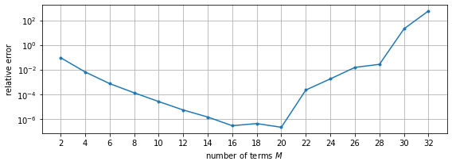
# solution
x = np.linspace(1e-12, 200, 100)
t = [1, 10, 100]
hx = np.empty((len(x), 3))
for itime in range(3):
hx[:, itime] = h_edelman(x, t[itime], T, S, delh) # h_edelman from Sec. 2.1
hs = stehfest(x, t, hbar, M=12, T=T, S=S)
# basic plot head and error
plt.subplot(121)
plt.plot(x, hs)
plt.xlabel('$x$ (m)')
plt.ylabel('head (m)')
plt.grid()
plt.legend(['t=1 d', 't=10 d', 't=100 d'])
plt.subplot(122)
plt.plot(x, hs - hx)
plt.xlabel('$x$ (m)')
plt.ylabel('error (m)')
plt.grid();
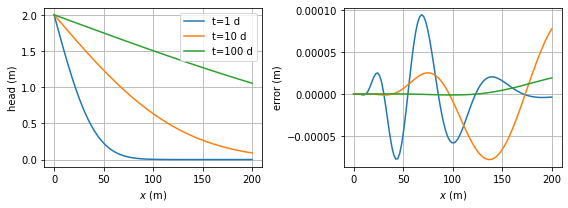
Unconfined flow with variable transmissivity#
# parameters
k = 10 # hydraulic conductivity, m
zb = 0 # aquifer base, m
Sy = 0.2 # phreatic storage coefficient, -
h0 = 10 # initial head and canal level, m
delh = 2 # change in canal level, m
Ht = h0 + 0.5 * delh # linearized saturated thickness, m
from scipy.special import erfc
def h_unconfined(x, t, k, H, S, zb, h0, delh):
pot0 = 0.5 * k * (h0 - zb) ** 2
delpot = 0.5 * k * (h0 + delh - zb) ** 2 - pot0
u = np.sqrt(S * x ** 2 / (4 * k * H * t))
pot = delpot * erfc(u) + pot0
return zb + np.sqrt(2 * pot / k)
# basic plot head
x = np.linspace(1e-12, 400, 100)
for t in [1, 10, 100]:
h = h_edelman(x, t, k * Ht, Sy, delh) + h0 # from Section 5.1
plt.plot(x, h, label=f'time={t} d')
hun = h_unconfined(x, t, k, Ht, Sy, zb, h0, delh)
plt.plot(x, hun)
plt.xlabel('x (m)')
plt.ylabel('head (m)')
plt.legend()
plt.grid();
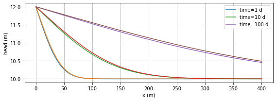